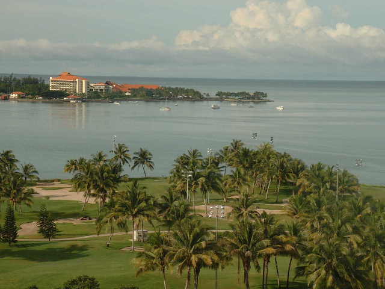
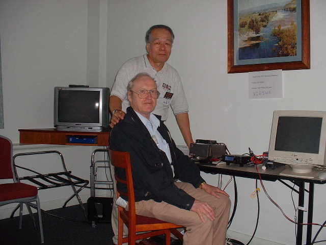
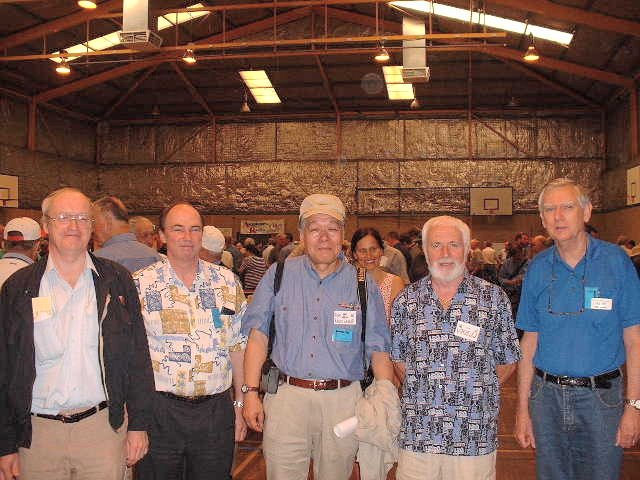

|
Flash ! DX
|
|
|
Flash ! DX
|
[Back Issues Nov.2002]
TIME:UTC(JST-09:00)
Report from JA1RJU (PM95sq)
30.Nov.2002(15:00a)
*ZL-TV 01:00- 45.24/25/26--
*VK-TV 01:00- 46.172/240 --
VK4RGG 02:00- 50.058 CW Beacon
VK4ADJ 02:24 50.110/130 SSB
FK8HA 02:25- 50.080 CW Beacon
VK4CH 02:33 50.110 SSB
VK4YPI 03:25 50.110/120 SSB
29.Nov.2002(15:00a)
*ZL-TV 01:00- 45.24/25/26--
ZL3JT 02:52 50.110 CW
ZL3SIX 02:55- 50.040 CW Beacon
*ZL-TV 02:55- 50.750 FM TV-Audio
*VK-TV 03:00- 46.172 --
ZL3NW 03:00 50.110 CW
ZL3TY 03:11 50.110 CW
VK3SIX 03:30 50.110 CW
ZL3JT 03:31 50.110 CW
ZL2AGI 03:32 50.110 CW
ZL3GS 04:00 50.110 CW
ZL3TIC 04:02 50.110/160 SSB
ZL3JT 04:11 50.104 CW
ZL3AFZ 04:20 50.145 SSB
VK3RMV 04:35- 50.294 CW Beacon QF02WH
XV3AA 04:42 50.130 SSB
VK5ZPG 04:42 50.110 SSB
VK3SIX 04:44 50.110 CW
ZL3TY 04:47 50.110 CW/SSB
28.Nov.2002(15:00a)
XV3AA 06:10 50.130 SSB
N7ET/DU7 06:44 50.110 CW
VK6RSX 09:00- 50.304 CW Beacon
27.Nov.2002(15:00a)
*VK-TV 07:00- 46.172 --
ZL3NW 07:04 50.110 CW
ZL3NW 07:43 50.110 CW
26.Nov.2002(15:00a)
*ZL-TV 02:00- 45.250 --
*VK-TV 03:00- 46.172 --
25.Nov.2002(15:00a)
*VK-TV 02:30- 46.172 --
V73GOD 02:45 50.110 SSB
|
◎ 2002年11月18日から25日までの8日間の日程で、
東マレーシア(East Malaysia)のコタ・キナバル(Kota kinabalu)から9M6JUを運用した。
9M6(Sabah州)の訪問は、3月-4月のケニンガウ(Keningau)から9M6AACと9M6JUを運用して以来で今年2度目。
今回はサイクル23のピークも過ぎコンデション的に最後のチャンスとなると考えられる北米、
ヨーロッパに対する"サービス"が目的だった。
このため、運用場所の選択もより効果的にDXが狙える場所を探すことにした。
この時期、VKや南部アジアの9M2、VUなどがヨーロッパとQSOしており、大いに期待して出かけたのだが、
残念ながら"サイクル23"の落ち込みをずっしりと肌で感じる結果となった。 滞在期間中、期待した本命の北米はおろか、ヨーロッパの信号も聞くことは一度も無かった。 昨年の秋や今年の春にはロングパスで中米、カリブまで聞こえたコンデションを考えると、 この方面へのパスはJAに対するコンデションと同様、東南アジアでも既にパスは無くなっている事が判った。 こんな中にあってYA4F(Afghanistan)とQSO出来たのが唯一の収穫だった。 以前は朝から晩までほとんど途切れる事無く聞こえていたJAの信号も、今回は入感する頻度もかなり少なくなっていた。 オープンしても入感時間は短く不安定になっているのが感じられた。 反面、普段はあまり聞こえたことの無い近場のWest Malaysiaの9M2/JI1ETU、9M2TOの両局が59+で入感し、 伝搬の微妙な変化を感じさせた。 11月13日に9M2TOが一日で300局以上のヨーロッパとQSOしたとの事だが、 この秋のコンデションはこのパスを最後に急激に降下してしまった。

 ホテルの11階から眺めるKota Kinabalu市街／中東・ヨーロッパ方向
|
18.Nov-25.Nov.2002(15:00a) ◎ 9M6JU(Kota Kinabalu=OJ85bx)の運用のためFlash ! DXのリポートは休止しました。
17.Nov.2002(15:00a) LW1DZ 22:04 50.145 SSB LU8DIO 22:05 50.135 SSB CX5BW 22:15 50.103 SSB CX4CR 22:24 50.115 SSB LU9AF 22:28 50.128 SSB LU3EX 22:35 50.101 CW *ZL-TV 00:00- 45.24/25/26-- *VK-TV 00:00- 46.172/240 -- V63SC 02:46 50.120 SSB VK4CP 03:59 50.140 SSB V63SC 04:50 50.120 SSB VK4RGG 04:59- 50.058 CW Beacon YA4F 08:30 50.115 CW SC 220deg. 16.Nov.2002(15:00a) KL-Data 00:00- 40.690 -- (4S7AB 09:06 50.107 CW JR6) (FR1GZ 10:14 50.110 SSB JR6) 15.Nov.2002(15:00a) *ZL-TV 23:30- 45.24/25/26-- ZL3NW 23:35 50.110 CW ZL3TY 23:55 50.110 CW ZL1VHF 00:10- 50.042 CW Beacon KH6SX 02:55 50.110 CW XU7ACG 03:10 50.130 SSB (A45WD 08:41 50.110 SSB JR6) (YA4F 09:51 50.130/135 SSB JR6) 14.Nov.2002(15:00a) *ZL-TV 00:00- 45.24/25/26-- *VK-TV 01:00- 46.172/240 -- FK8HA/B 01:50- 50.080 CW Beacon(RG37FR) VK4RGG 01:50- 50.058 CW Beacon V73SIX 01:50- 50.014 CW Beacon VK4APG 02:54 50.110 CW VK4BLK 05:53 50.110 CW (YA4F 08:40 50.110 CW JR6) (JT1CO 08:41 50.110 CW JR6) (OZ.SM.LZ.ON 09:00- 50.110 CW SC JR6) VK6RSX 09:40- 50.304 CW Beacon VK8RAS 13:30- 50.047 CW Beacon VK6RSX 13:30- 50.304 CW Beacon DU1EV/B 13:30- 50.008 CW Beacon 13.Nov.2002(15:00a) *ZL-TV 00:00- 45.24/25/26-- VK-TV 00:00- 46.172/240 -- ZL3SIX 03:20- 50.040 CW Beacon ZL2AGI 03:32 50.110 CW VK4RGG 03:30- 50.058 CW Beacon VK8RAS 03:35- 50.047 CW Beacon VK2EFT 03:35 50.110 CW VK4APG 03:52 50.110 SSB ZL3NW 06:52 50.110 CW ZL3SIX 06:52- 50.040 CW Beacon VK4BLK 07:03 50.110 CW VK4CH 07:17 50.110 SSB VK4AJS 07:21 50.110 SSB VK4WTN 07:24 50.110 SSB VK3DQJ 07:25 50.110/125 SSB VK4BLK 08:03 50.110 SSB VK4BLK 08:12 50.110/107 CW Worked EU VK8RAS 08:20- 50.047 CW Beacon VK4RGG 08:20- 50.058 CW Beacon VK6RSX 08:20- 50.304 CW Beacon VK4ADC 08:22 50.080 CW CQ EU ZL3TY 08:58 50.110 CW V63SC 11:40 50.120 SSB QSL JM1LBO 12.Nov.2002(15:00a) *ZL-TV 00:00- 45.24/25/26-- *VK-TV 00:00- 46.172/240 -- VK4RGG 02:30- 50.058 CW Beacon VK8RAS 07:00- 50.047 CW Beacon VK4BLK 07:16 50.110 CW (YA4F 08:45 50.110 CW JA1-) DU1EV/B 13:30- 50.008 CW Beacon VK8RAS 13:30- 50.047 CW Beacon VK6RSX 13:30- 50.304 CW Beacon N7ET/DU7 13:44 50.110 CW 11.Nov.2002(15:00a) ZL3JT 23:55 50.110 CW ZL3NW 23:56 50.110 CW ZL2AGI 23:58 50.110 CW ZL2AAA 00:01 50.120 SSB ZL2TPY 00:01 50.120/130 SSB ZL3NW 00:04 50.105 CW ZL3SIX 00:05- 50.040 CW Beacon ZL3NW 00:15 50.110 CW ZL3JT 02:32 50.110 CW ZL3NW 07:16 50.110 CW ZL3TY 07:30 50.102 CW ZL3JT 07:40 50.106 CW 10.Nov.2002(15:00a) (J3/W6JKV 00:15 50.113 CW JA6/JR6) (EH9AI 00:08 50.113 CW JA4-JR6) (EH5RM 00:11 50.113 CW JA5/JR6) (EH7KW 00:13 50.105 CW JA3-JR6) (EH9AI 00:20 50.097 CW JA5) (EH7HZ 00:43 50.130 SSB JA6/JR6) (PY0FF 00:23 50.103 CW/SSB JA6/JR6) (CT3DL 00:50 50.135 CW JA6) PY0FF 00:58 50.105 CW/SSB (J3/W6JKV 00:50 50.113 CW JA2-JR6) (PY0FF 01:00 50.105 SSB JA6-) *VK-TV 02:30- 46.172 -- (ZK1AKX 02:45 50.110 CW JA6/JR6) VK6RSX 11:40- 50.304 CW Beacon VK6RSX 12:45- 50.304 CW Beacon
| VK6RSX/B(50.304MHz=OG89) was re-installed 10th November(Sunday) after tx repair in Perth. It's being heard again via M/S over the 1,200 Km path so is getting out OK once again. (Don, VK6HK) |
09.Nov.2002(15:00a)
(9L1AB 22:55 50.107 CW JA6/JR6)
(EH8BPX 23:13 50.110 SSB JA6/JR6)
(EH7KW 23:14 50.110 CW JA6/JR6)
*ZL-TV- 00:00 45.24/25/26--
*VK-TV- 01:00 46.172/240 --
ZK1AKX 01:15 50.103 CW
XY1M 06:35 50.110 SSB
(4S7AB 06:55 50.110 CW JA6/JR6)
(8Q7JE 07:26 50.105 CW JA6/JR6)
9N7SZ 11:45 50.105 CW QSX 50.155
VK4ABW 12:16 50.110 CW
08.Nov.2002(15:00a)
*ZL-TV 00:00- 45.24/25/26--
*VK-TV 01:00- 46.172/240 --
VK4RGG 01:30- 50.058 CW Beacon
VK2QF 01:58 50.110/107 CW
VK2DN 02:04 50.110 CW
VK2YVG 02:19 50.110 SSB
VK2ZXC 02:25 50.110/140 SSB
VK4IR 02:32 50.110 SSB
VK2BZE 02:37 50.130 SSB
VK2ZXC 02:36 50.110/150 SSB
*ZL-TV 02:40- 50.760 FM
VK2EM 02:40 50.110/150 SSB
VK3EK 02:41 50.110/160 SSB
VK4APG 03:06 50.110 SSB
VK2YO 03:07 50.110 SSB
VK4PU 03:17 50.110 SSB
VK2HO 03:18 50.110 SSB
VK5ZBK 03:18 50.110 SSB
VK4CP 03:19 50.110 SSB
VK2FAD 03:38 50.110 SSB
VK2AIF 03:47 50.110 SSB
VK2TQP 03:53 50.110/137 SSB
VK4APG 04:09 50.110 SSB
VK5PO 04:15 50.110 SSB
XV9DT 04:17 50.110 SSB
VK4WDM 12:15 50.110 SSB
VK4RTL 12:15- 50.087 CW Beacon
VK4CP 12:32 50.110 CW
07.Nov.2002(15:00a)
KH7MS 23:37 50.130 SSB
CE3RR 23:45 50.120 SSB
CE3SAD 23:40 50.110 CW
*VK-TV 00:00- 46.172/240 --
*ZL-TV 00:00- 45.24/25/26--
CE3RR 00:05 50.140 SSB
ZK1AKX 00:54 50.103 CW
VK2DN 01:59 50.110 CW
ZL3AAU 02:04 50.110 CW
VK3AMK 02:23 50.117 SSB
VK2ZXC 02:32 50.123 CW
VK4TZL 03:14 50.110 SSB
V73GOD 04:35 50.110 SSB
KG6DX 08:18 50.110 CW
LY2BAW 08:27 50.112 CW SC
DL9USA 08:39 50.100 CW
SP3RNZ 08:54 50.112 CW
VK8AH 12:40 50.110 CW
06.Nov.2002(15:00a)
VK4BLK 05:33 50.110 CW
VK4JH 06:35 50.110 CW
VK4CXQ 06:40 50.110 CW
N7ET/DU7 06:44 50.110 CW
|
◎ [SILENT KEY] Complete details have not been available yet,
but there was a report this past weekend that KL7Y(Daniel),
was killed in a motorcycle accident in Hawaii.
(November 04 2002:Steve, VK3SIX)
  (左)SEANET記念局VI6SWAを訪れたVK6RO・Graham／Hamfest 2002の会場でVK6の6mマンとEyeball 左からVK6RO、VK6WD、VK6KK(JA1RJU)、VK6JJ、VK6HK
|